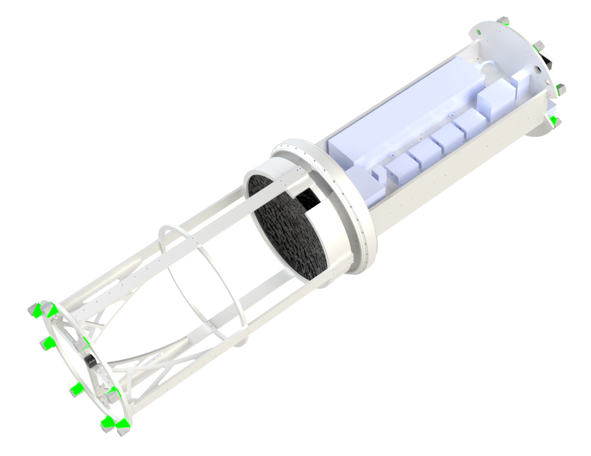
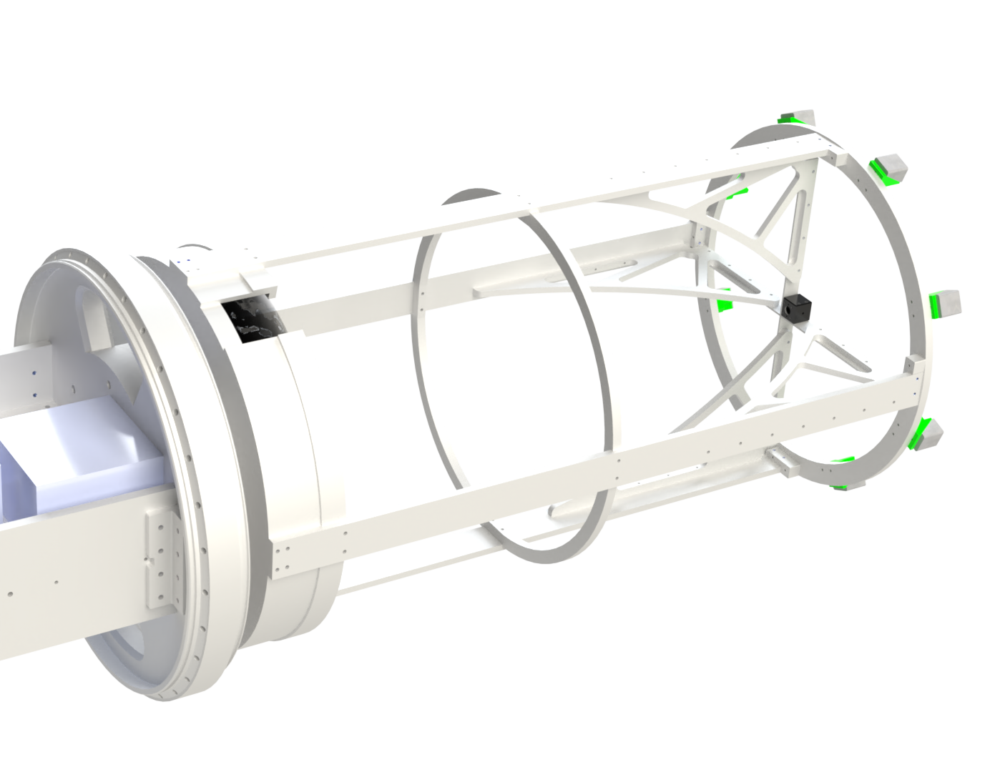

TOMEX-LIDAR
This is a LIDAR system that was being designed mainly by me with design input from professors of UIUC and UNH as well as NASA Wallops Flight Facility. The goal was to mount it on a NASA rocket in 2022 to survey sodium in the upper atmosphere. Unfortunately due to delays, I graduated before the project could be seen to completion so below only the work that was completed as of July 2022 is included.
Forward Mirror Assembly Cross Section
Below, a 2 tiered Radax joint allows connection of outer rocket skin (hidden) to inner shroud. A mirror mount with opening for fiber optics and cushioning polymer to protect mirror from vibrations during launch and re-entry. And support beams allows alignment of mirror and “Spyder” (forward prism system) on the same axis.
